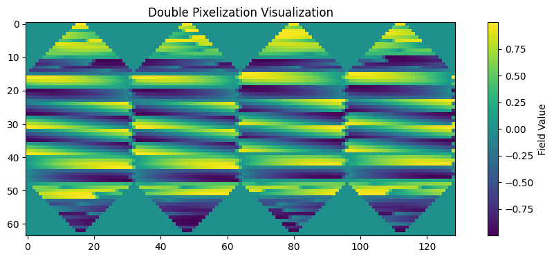

HealPIX Tutorial#
This tutorial demonstrates key HealPIX functionality including:
Visualization using double pixelization
Zonal averaging
Regridding between different grids
import matplotlib.pyplot as plt
import numpy as np
import torch
import earth2grid
from earth2grid import healpix
# Create a sample HealPIX grid
level = 4 # Resolution level (higher = finer resolution)
grid = healpix.Grid(level=level, pixel_order=healpix.XY())
# Create a sample field with lat/lon dependence
def create_sample_field(lat, lon):
"""Create a sample field with lat/lon dependence"""
lat = torch.from_numpy(lat)
lon = torch.from_numpy(lon)
return torch.cos(torch.deg2rad(lat)) * torch.sin(2 * torch.deg2rad(lon))
# Generate the sample field
field = create_sample_field(grid.lat, grid.lon)
/Users/nbrenowitz/workspace/nvidia/earth2grid/earth2grid/healpix/core.py:60: UserWarning: healpixpad_cuda module not available, reverting to CPU for all padding routines
warnings.warn("healpixpad_cuda module not available, reverting to CPU for all padding routines")
1. Visualization using double pixelization#
Double pixelization provides a visually appealing way to view HealPIX data without interpolation, preserving the native pixel structure
# Convert to double pixelization
field_double = healpix.to_double_pixelization(field)
plt.figure(figsize=(12, 4))
plt.imshow(field_double)
plt.colorbar(label='Field Value')
plt.title('Double Pixelization Visualization')
plt.show()

2. Zonal Averaging#
Compute the zonal average of the field (average along latitude circles)
zonal_avg = healpix.zonal_average(field)
# Plot the zonal average
plt.figure(figsize=(8, 4))
plt.plot(grid.lat[::100], zonal_avg[::100]) # Plot every 100th point for clarity
plt.xlabel('Latitude (degrees)')
plt.ylabel('Zonal Average')
plt.title('Zonal Average of Sample Field')
plt.grid(True)
plt.show()
---------------------------------------------------------------------------
ValueError Traceback (most recent call last)
Cell In[3], line 5
3 # Plot the zonal average
4 plt.figure(figsize=(8, 4))
----> 5 plt.plot(grid.lat[::100], zonal_avg[::100]) # Plot every 100th point for clarity
6 plt.xlabel('Latitude (degrees)')
7 plt.ylabel('Zonal Average')
File ~/workspace/nvidia/earth2grid/.venv/lib/python3.12/site-packages/matplotlib/pyplot.py:3838, in plot(scalex, scaley, data, *args, **kwargs)
3830 @_copy_docstring_and_deprecators(Axes.plot)
3831 def plot(
3832 *args: float | ArrayLike | str,
(...) 3836 **kwargs,
3837 ) -> list[Line2D]:
-> 3838 return gca().plot(
3839 *args,
3840 scalex=scalex,
3841 scaley=scaley,
3842 **({"data": data} if data is not None else {}),
3843 **kwargs,
3844 )
File ~/workspace/nvidia/earth2grid/.venv/lib/python3.12/site-packages/matplotlib/axes/_axes.py:1777, in Axes.plot(self, scalex, scaley, data, *args, **kwargs)
1534 """
1535 Plot y versus x as lines and/or markers.
1536
(...) 1774 (``'green'``) or hex strings (``'#008000'``).
1775 """
1776 kwargs = cbook.normalize_kwargs(kwargs, mlines.Line2D)
-> 1777 lines = [*self._get_lines(self, *args, data=data, **kwargs)]
1778 for line in lines:
1779 self.add_line(line)
File ~/workspace/nvidia/earth2grid/.venv/lib/python3.12/site-packages/matplotlib/axes/_base.py:297, in _process_plot_var_args.__call__(self, axes, data, return_kwargs, *args, **kwargs)
295 this += args[0],
296 args = args[1:]
--> 297 yield from self._plot_args(
298 axes, this, kwargs, ambiguous_fmt_datakey=ambiguous_fmt_datakey,
299 return_kwargs=return_kwargs
300 )
File ~/workspace/nvidia/earth2grid/.venv/lib/python3.12/site-packages/matplotlib/axes/_base.py:494, in _process_plot_var_args._plot_args(self, axes, tup, kwargs, return_kwargs, ambiguous_fmt_datakey)
491 axes.yaxis.update_units(y)
493 if x.shape[0] != y.shape[0]:
--> 494 raise ValueError(f"x and y must have same first dimension, but "
495 f"have shapes {x.shape} and {y.shape}")
496 if x.ndim > 2 or y.ndim > 2:
497 raise ValueError(f"x and y can be no greater than 2D, but have "
498 f"shapes {x.shape} and {y.shape}")
ValueError: x and y must have same first dimension, but have shapes (31,) and (1,)
3. Regridding#
Demonstrate regridding between different grid types
# Create a lat-lon grid
nlat, nlon = 33, 64
latlon_grid = earth2grid.latlon.equiangular_lat_lon_grid(nlat, nlon)
# Create regridder from HealPIX to lat-lon
regridder = earth2grid.get_regridder(grid, latlon_grid)
# Regrid the field
field_regridded = regridder(field)
# Plot original and regridded fields
fig, (ax1, ax2) = plt.subplots(1, 2, figsize=(12, 4))
# Original HealPIX field
im1 = ax1.scatter(grid.lon, grid.lat, c=field, s=1)
ax1.set_title('Original HealPIX Field')
plt.colorbar(im1, ax=ax1)
# Regridded field
im2 = ax2.pcolormesh(latlon_grid.lon, latlon_grid.lat, field_regridded)
ax2.set_title('Regridded to Lat-Lon')
plt.colorbar(im2, ax=ax2)
plt.tight_layout()
plt.show()
Additional: Regridding between HealPIX grids of different resolutions#
Create a higher resolution HealPIX grid
high_res_grid = healpix.Grid(level=level+1, pixel_order=healpix.XY())
# Create regridder
high_res_regridder = earth2grid.get_regridder(grid, high_res_grid)
# Regrid the field
field_high_res = high_res_regridder(field)
# Plot original and high-resolution fields
fig, (ax1, ax2) = plt.subplots(1, 2, figsize=(12, 4))
# Original resolution
im1 = ax1.scatter(grid.lon, grid.lat, c=field, s=1)
ax1.set_title(f'Original HealPIX (Level {level})')
plt.colorbar(im1, ax=ax1)
# High resolution
im2 = ax2.scatter(high_res_grid.lon, high_res_grid.lat, c=field_high_res, s=0.5)
ax2.set_title(f'High Resolution HealPIX (Level {level+1})')
plt.colorbar(im2, ax=ax2)
plt.tight_layout()
plt.show()